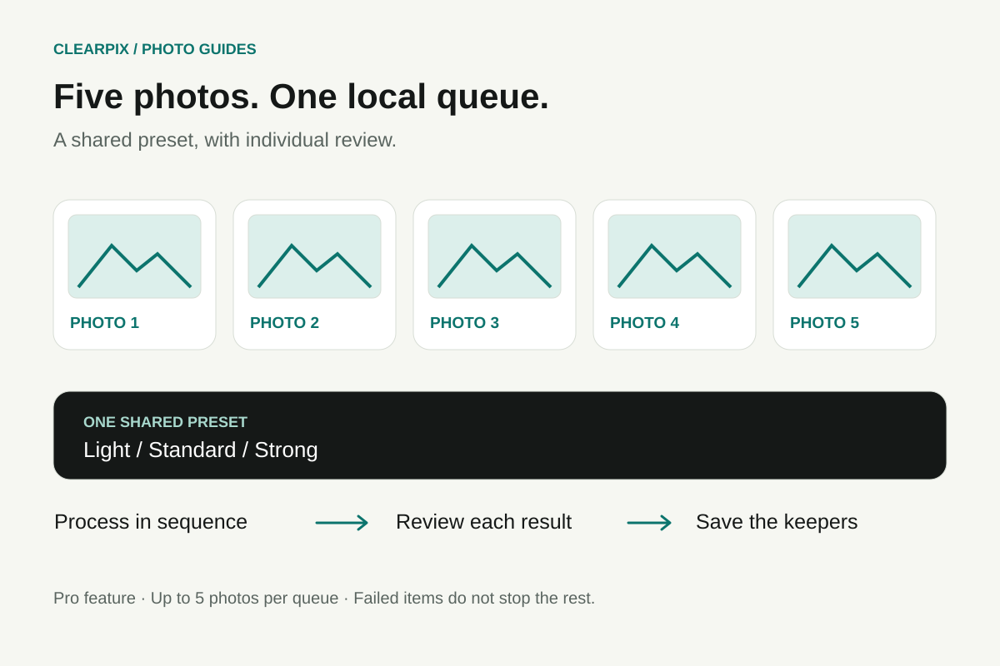

Several portraits came out soft
Give pictures from the same occasion a shared enhancement pass.
You have a handful of pictures from the same evening, trip, or family album. They all need a little help. ClearPix lets you enhance up to five photos together, so you can spend more time choosing your favourites.
Give pictures from the same occasion a shared enhancement pass.
Work through up to five photos in a queue, keeping originals alongside the new copies.
Choose once, run the queue, and save completed pictures individually or together. Batch is included with Pro.
Choose up to five images that suit the same enhancement preset.
Tap Run Queue and let ClearPix process the photos in sequence.
Review each completed result, then save one or save them together.

Choose up to five photos, apply one preset, and let ClearPix work through the queue on your device. Save completed results individually or together with Pro.
Choose pictures with similar lighting and sharpness, such as portraits from one evening or scans from one album.
You can enhance up to five photos per queue. Batch enhancement is included with Pro.
Yes. Save completed results individually, or save the completed set together.
Group similar photos into separate queues, or use single-photo enhancement for a picture that needs its own approach.
Bring a small collection into ClearPix and give each picture a clearer look.
Download on the App StoreBy the ClearPix team · Contact support